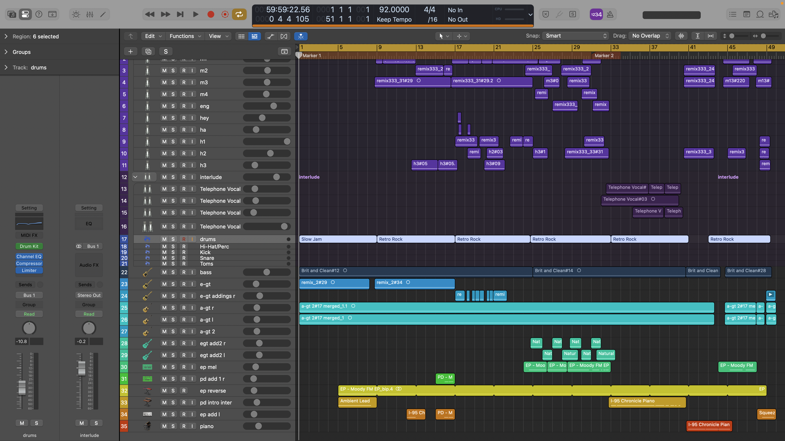

wini：
這首歌並不是我寫的第一首歌，但是是第一首由自己在家錄製的歌，用著拼拼湊湊勉強能用的設備錄製，除了Guitar及Bass以外的樂器都是midi。

說實話，「寫歌」本身這件事，並不困難，困難的是，在有期待的前提下，如何寫出來會令自己滿意。與我從前錄製guitar cover不同，即使彈錯，也不過是我已知並接受了的技術上的不足，但今次，這個logic file裡面每一條track都需要由我自己輸入，所以拍子上的偏差，是不容許存在的，因為一旦錯一條，全曲便會變得混亂。這首歌是團隊的，容不得在我這裡開始出錯。我開始埋怨自己，無論是技術上還是天賦上，也開始審視自己，自己是否有能力去完成與大家的承諾。好在，比起留在原地躊躇不前，我選擇了接受自己，把編曲控制在自己可以掌握的難度上。錄音當練習，幾個小節的片段可以錄上百次，比起錄音上的製作，編曲上，只要不如意便從頭來過，可謂任性，所以每個版本的demo都大相徑庭。

最終版本敲定下來其實我是不滿意的，旋律普通不入耳、吉他太平淡、chord progression不夠豐富、琴聲太生硬、細節不夠、歌聲難聽刺耳、和聲太突兀等等。我總認為能做得更好，但是我現時能力貌似就到這裡了，時間上也不容許我繼續一改再改，青春總是會留上些遺憾的，我這樣安慰自己。
Demo 1：
Demo 2：
Demo 3：
我不是愛主動的人，但是製作總是要尋求意見的。雖然製作上有諸多不如意，但是在我開始主動的過程中我接收到了許多意料之外的溫暖，是同學試聽時表現的驚喜、是老師知曉後對製作進度的關心還有家裡人的鼓勵。這次歌曲裡用來錄製的bass甚至是和朋友借來的，謝謝你，還有謝謝幫我寫鼓的朋友。自己的製作能得到如此多回饋與幫助，我想自己簡直是世界上最幸福的人。
從f1開始學習的吉他與其餘自學的樂器注定了這次製作的粗糙，望大家嘴下留情。
這首歌很淡，我時常想著把她寫得更豐富，更有趣，可是我發現，怎麼加都不行，變得奇怪，變得不似她，或者說，不像我。也許她本來就該如此平淡，就像我本人對青春的體驗，我沒有轟轟烈烈的故事，這次畢業mv也是一時興起。